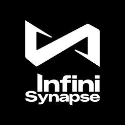
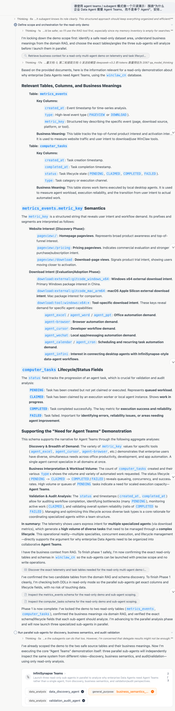
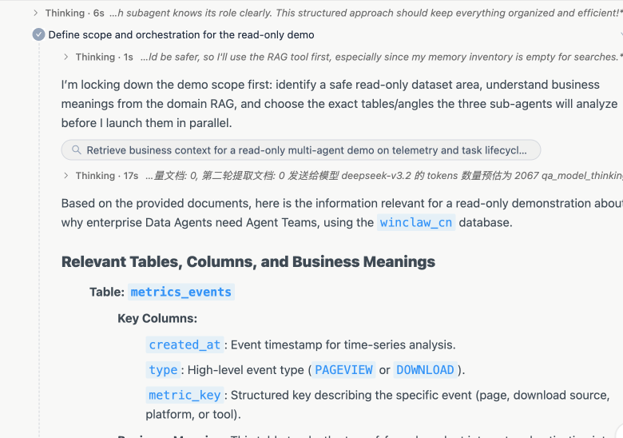
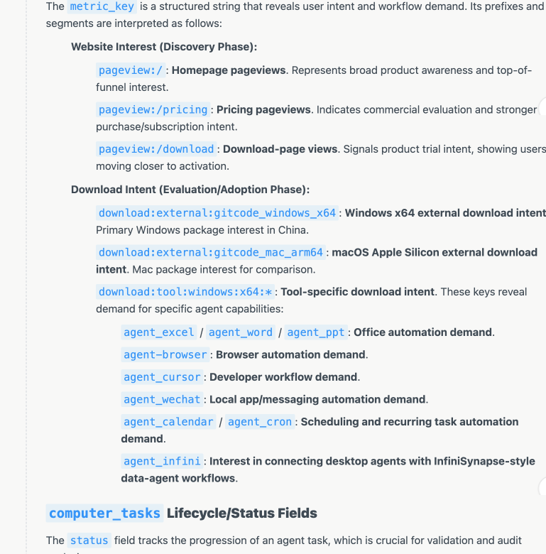
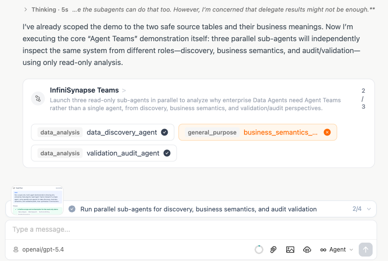
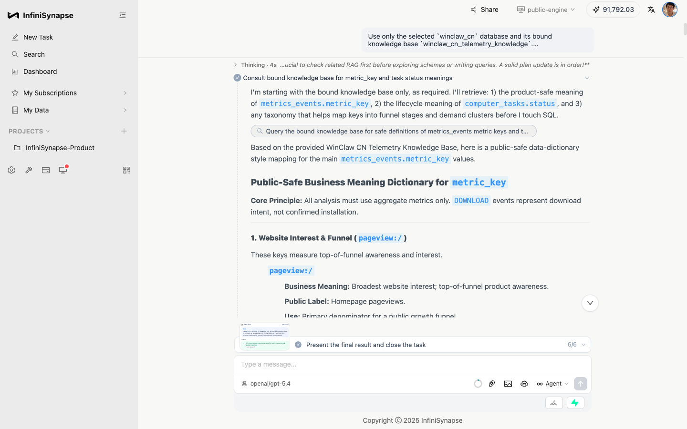
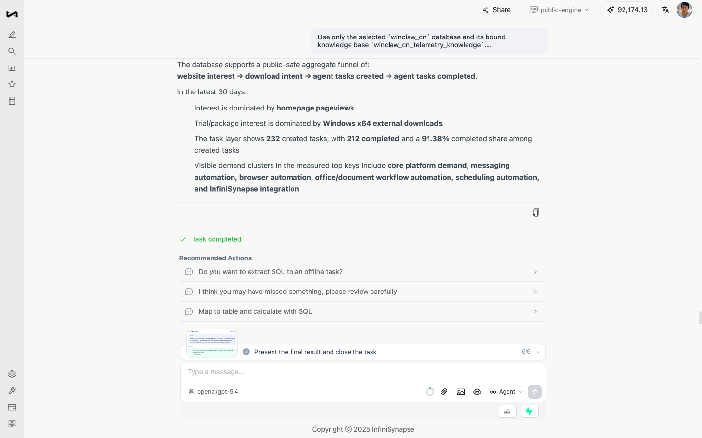
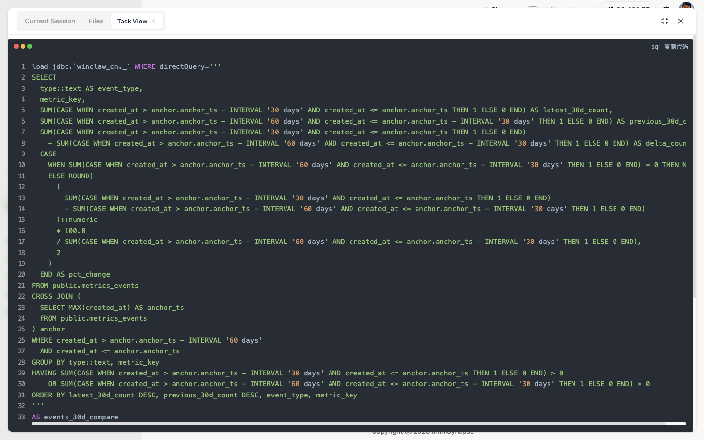
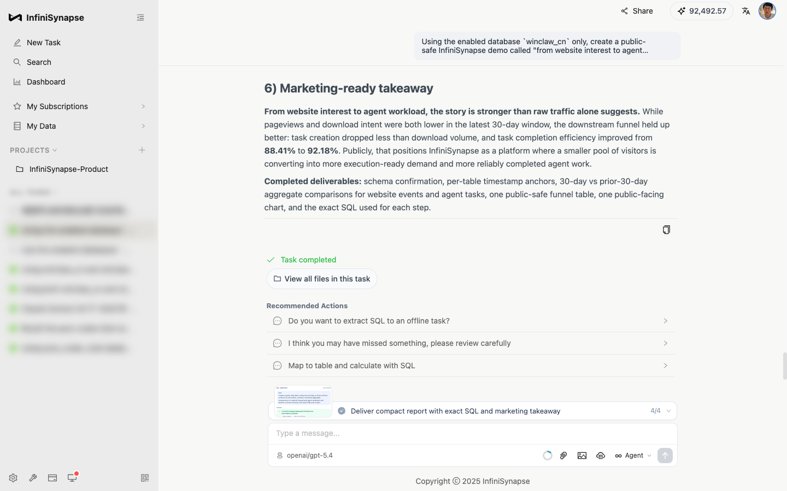

MPD AI驱动创新峰会 · AI重塑数据生产与分析
构建 Data Agent 的完整 Harness
InfiniSynapse 的企业级数据分析栈实践
先把问题摆正
企业数据分析不是“让 AI 写一段能跑的代码”
Code Agent
目标函数：代码能运行，测试能通过。
进入企业现场后分叉
Data Agent
目标函数：答案可信，口径正确，过程可复核。
Data Agent 的难点不是 SQL 语法，而是“先找到该相信什么，再算出可信答案”。
挑战 01 · 搜索失效
百万级数据资产，让“关键词搜索”变得不可靠
tables
dashboards
notebooks
docs
Excel
API
metrics
history
收入下降?
同一个“收入”，可能叫 ARR、确认收入、净收入、rev_recognition_fact。第一能力不是写 SQL，而是找到真正相关的数据资产。
挑战 02 · Source of Truth
找到资产只是开始，难的是判断该信哪一个
旧文档GMV = 下单金额
看板 A按下单时间
认证口径确认收入 - 退款
Notebook藏着转换逻辑
企业数据分析里最危险的错误，是代码没报错、数字也算出来了，但用的是错口径。
挑战 03 · 没有确定性 Oracle
Data Agent 没有像代码测试那样的“判题器”
Code Agent
unit test
type check
build
e2e
失败就修，通过即收敛
Data Agent
财务季度?
净收入?
华东口径?
数据是否完整?
是否可回答?
没有单元测试告诉它答案是否正确
可靠性必须来自系统设计：证据链、口径链、中间结果、不可回答边界。
为什么 Code Agent 范式会被击穿
数据分析里的很多错误，不会抛异常
query executed
chart generated
report written
exit code 0
专业、完整、错误
找错表 · 信错口径 · 算对但解释错
语义错误不会像编译错误一样提醒你。它会安静地生成一个看起来很专业的错误报告。
所以真正的 Data Agent 需要什么
不是更长的 Prompt，而是一套可信答案生产线
这是 InfiniSynapse 要重建完整 Harness 的原因。
InfiniSynapse 的解法
不是一个功能解决一个问题，而是一条闭环一起收敛
01 搜索失效
数据源对象化
连接器、schema、元信息、知识绑定
02 口径混乱
InfiniRAG 语义绑定
指标定义、历史分析、业务规则、用户偏好
03 缺少验证
InfiniSQL + Task View
具名中间表、SQL 轨迹、结果表、图表、文件
InfiniAgent
Plan · Probe · Execute · Verify · Repair
解法 01 · InfiniAgent
Agentic 范式：自主探查，而不是一次性回答
自主探查循环
01Plan锁定只读边界
02ProbeRAG + schema 探查
03Execute工具调用与中间结论
04Verify口径与生命周期验证
05DelegateAgent Teams 并行


Probe · 先理解表、字段、业务含义

Verify · 把事件、状态、生命周期对齐

Delegate · Agent Teams 并行执行
关键不是“生成一段答案”，而是 Agent 能自己发现缺口、调用工具、验证口径，并在需要时拆给多个专门 Agent。
解法 02 · 数据源对象化
数据源不是连接串，而是 Agent 的工作上下文
Data Source
schemasample权限Associated RAG执行策略
把数据库、元信息、权限、知识库绑定成一个对象，Agent 才能知道“分析这个库时应该带上哪些语义”。
解法 03 · 跨源执行
企业数据不在一个地方，执行引擎不能假装它在一个地方
MySQLPostgreSQLOracleClickHouseExcelMongoDBSnowflakeAPI
InfiniSQL Engine
联邦查询 · 聚合下推 · 只回传结果
不是把所有数据拉到 notebook 里 merge，而是在语言层表达关系，在执行层做跨源与下推。
解法 04 · InfiniSQL
多轮追问，会沉淀成一个面向问题的虚拟数仓
select ... as
region_revenue
select ... as
abnormal_region
join ... as
campaign_bridge
train ... as
scorecard_model
session tables
每次工具调用都产出具名表。Agent 后续不是回到原始明细重新猜，而是在已经被命名和抽象过的状态上继续分析。
解法 05 · InfiniRAG
业务知识必须绑定到数据源，而不是事后塞进上下文
指标定义
库表含义
历史分析
用户偏好
不确定性边界
解法 06 · Runtime RAG
运行时先问知识库，再用 SQL 验证可计算事实
1问绑定知识库
2确认指标和禁区
3生成 SQL 验证事实
4报告中分离事实与解释

Phase: RAG Research

事实与业务解释分离
解法 07 · 可审计工作流
没有确定性测试，就必须把证据链打开给人看
Sources
Tools
SQL
Table
Chart
Files

Task View：每步 SQL 与结果表

完成态：结论、图表、后续动作
解法 08 · 从回答到资产
一次分析不应该聊完就消失，而要变成组织可复用资产
Task目标与上下文
Tables具名中间结果
Charts可复核图表
Files报告/图/脚本
Memory下次可召回
硬证据
架构不是概念，必须能穿过真实企业边界
0.7712AUC，高于 XGBoost 学术基线 0.7611
企业交付边界
海关、金融、央国企要的不是“能跑”，而是边界清楚
客户域内
业务库文件审计日志私有模型
InfiniSynapse Private
权限 · 执行 · 证据链
Takeaway
Data Agent 的本质，是可信答案系统
01找到该信什么
02算出可复核事实
03沉淀可复用资产
InfiniSynapse 的目标：给企业一个真正能交付的 Data Agent。